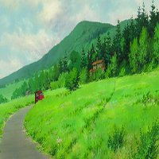
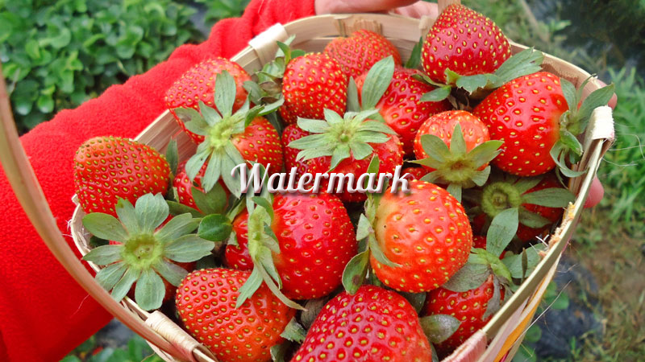

Crate raster [−] [src]
Raster
Raster provides a simplified API for processing pixels of raster images.
Creating Images
use raster::image::Image; use raster::editor; // Create an image from file let image1 = Image::from_file("tests/image/sample.png").unwrap(); // Create a blank 100x100 image. Defaults to a black background. let image2 = Image::blank(100, 100); // Save blank editor::save(&image2, "tests/out/test_blank.png");
A blank image:
Editing and Saving Images
use raster::image::Image; use raster::editor; // Create an image from file let image = Image::from_file("tests/image/sample.png").unwrap(); // Resize an image to exactly 200x200 pixels let image = editor::resize_exact(&image, 200, 200).unwrap(); // Save it editor::save(&image, "tests/out/test_resize_exact.png");

Blending 2 Images
use raster::image::Image; use raster::editor; // Create images from file let image1 = Image::from_file("tests/image/sample.jpg").unwrap(); let image2 = Image::from_file("tests/image/watermark.png").unwrap(); // Blend image2 on top of image1 using normal mode, opacity of 1.0 (100%), with image2 at the center, with 0 x and 0 y offsets. whew let image3 = editor::blend(&image1, &image2, "normal", 1.0, "center", 0, 0).unwrap(); // Save it editor::save(&image3, "tests/out/test_blend_normal.png");

See the modules, more specifically the editor module for more info.
Modules
| color |
A module for handling colors. |
| compare |
A module for comparing images. |
| editor |
A module for editing images. |
| image |
A module for handling a raster image. |